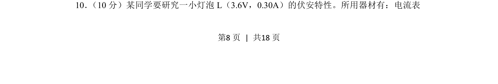
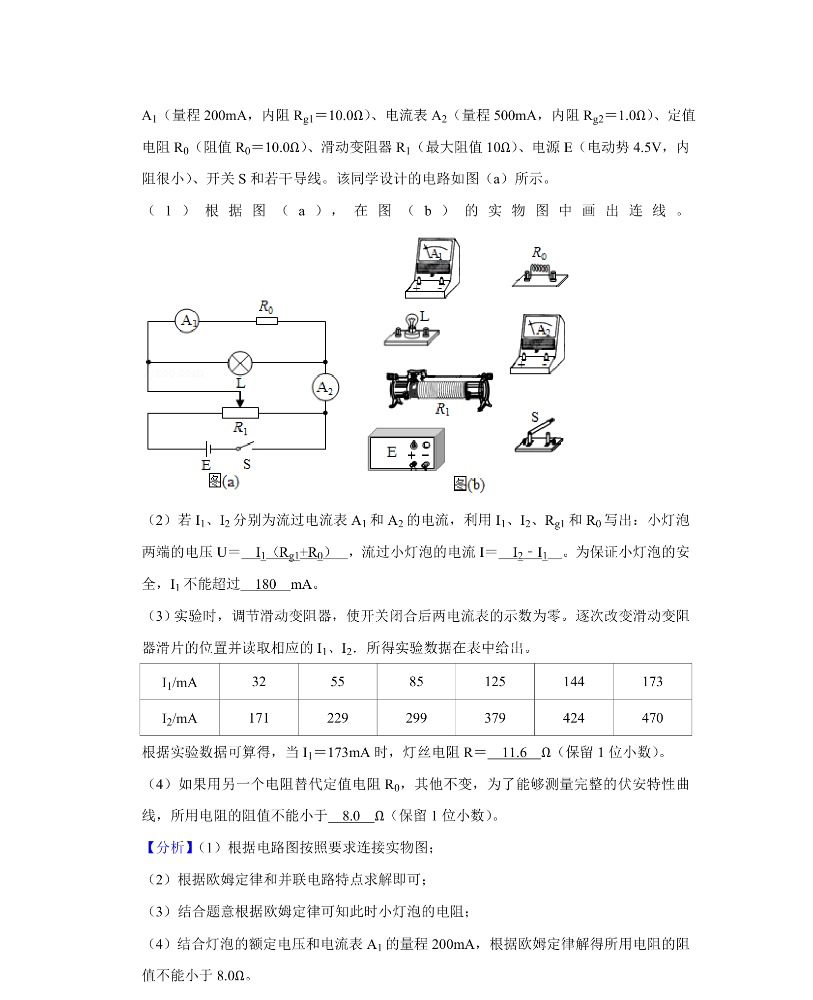
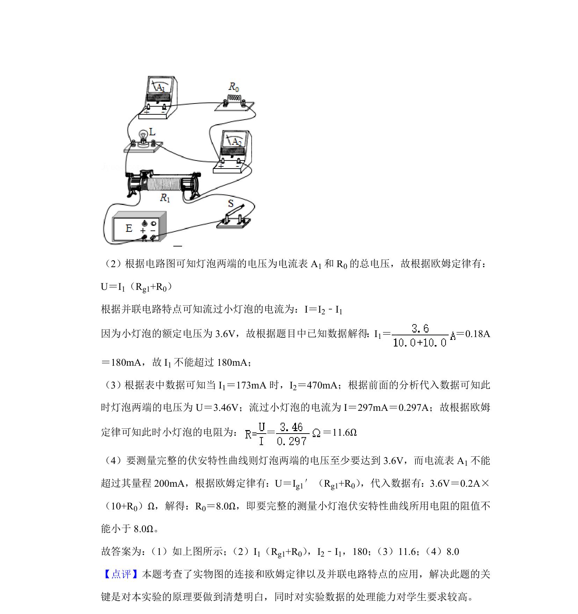

2020-新课标Ⅱ-10
吉林2020卷新课标Ⅱ不分题10题型选择难中
考点：伏安特性曲线 滑动变阻器分压接法 电表选择与连接
题面


摘要
研究小灯泡伏安特性曲线的实验电路设计与操作
关联考点
答案与解析

📄 原 PDF 第 8 页：素材/真题/吉林/2008-2024·（吉林）物理高考真题/2020年高考物理试卷（新课标Ⅱ）（解析卷）.pdf
题干文本
10． （10分）某同学要研究一小灯泡L（3.6V，0.30A）的伏安特性。所用器材有：电流表
解析文本